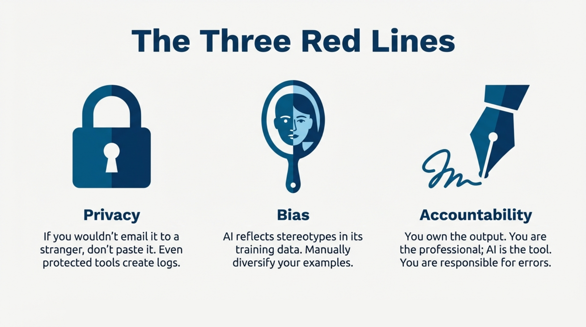
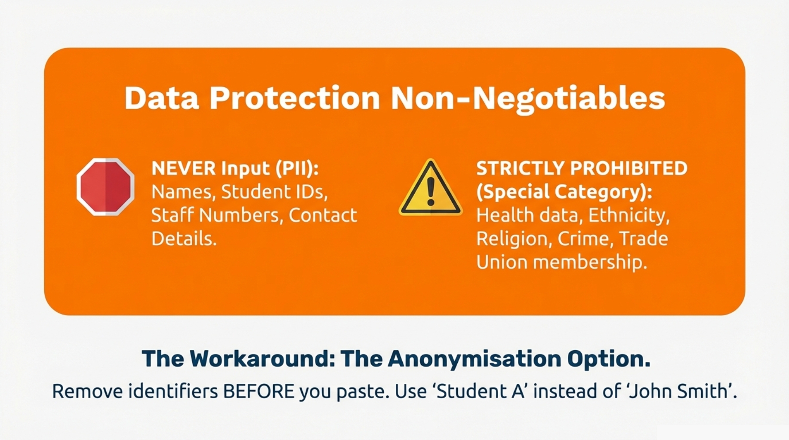

MODULE 4 · Responsible Use
Module 4: Responsible Use
Introduction
In Module 2, we learned that Generative AI is like a "Super-Read Parrot" that predicts words based on patterns. Here is the catch: Parrots repeat what they hear.
If you type confidential information into a public AI tool (like the free version of ChatGPT or generic online chatbots), you are effectively sending that data to an external computer. That data might be used to train the next version of the model.
This brings us to the most critical part of AI literacy: Knowing where the "Red Lines" are.
The Privacy Red Line
The Golden Rule

If you would not email it to a stranger, do not paste it into AI.
Even with enterprise protection, AI interactions are logged, may be reviewed by IT administrators, and could potentially be subject to legal discovery. Treat the AI like a very efficient but indiscreet colleague.
What is Personally Identifiable Information (PII)?
PII is any data that could identify a specific individual, either directly or in combination with other information.
Direct identifiers (never input these):
Category | Examples |
|---|---|
Names | Student names, staff names, external contacts |
ID numbers | Student IDs, staff numbers, National Insurance numbers |
Contact details | Email addresses, phone numbers, home addresses |
Financial data | Bank details, salary information, bursary amounts |
Authentication | Passwords, security answers, access codes |
Indirect identifiers (use caution):
These might not identify someone alone, but combined with other information could do so:
Category | Examples | Risk |
|---|---|---|
Course + Year + Characteristic | "The mature student in Level 2 Nursing who..." | May identify individual in small cohorts |
Role + Department + Issue | "The technician in Chemistry who raised a grievance..." | Could narrow to one person |
Unique circumstances | "The student whose visa was rejected in October..." | Context may make identification possible |
Under UK GDPR, some data requires extra protection. Never input health and medical information, race and ethnicity data, religious beliefs, sexual orientation, political opinions, trade union membership, biometric data, or criminal records into AI tools - even protected ones - without explicit guidance from your Data Protection Officer.
The Anonymisation Option
Sometimes you need AI help with a task that involves real situations. The solution: anonymise before you paste.
Instead of... | Use... |
|---|---|
"Draft feedback for John Smith (ID: 12345678)" | "Draft feedback for Student A" |
"Summarise the extenuating circumstances for Sarah in Level 3 Biology" | "Summarise the following extenuating circumstances case: [paste details with names removed]" |
"Write a reference for Dr James Wilson in Chemistry" | "Write a reference for a Senior Lecturer in a science department with the following achievements: [list achievements]" |
The rule: Remove names, IDs, and identifying details before the information enters the AI. You can add them back to the output afterwards.
Lesson 4.2: The Bias and Accountability Red Lines
The Bias Red Line
Remember: AI learned to write by reading the internet. The internet contains humanity's knowledge - and humanity's biases.
AI models absorb and reflect the stereotypes present in their training data. This is not a flaw that can be "fixed" - it is inherent to how the technology works.
Bias in Practice: HE Examples
Gender bias:
Ask AI to write a profile of a "professor" and it will often default to male pronouns and stereotypically male interests. Ask for a "nurse" or "teaching assistant" and watch the pronouns shift.
Your responsibility: Review AI-generated content for gendered assumptions, especially in job descriptions, case studies, and example scenarios.
Cultural bias:
AI training data over-represents Western, English-language sources. This affects:
Area | How bias appears |
|---|---|
Names in examples | Default to Anglo-American names (John, Sarah) rather than diverse names |
Cultural references | Examples assume Western contexts (Christmas breaks, not Eid or Diwali) |
Food and lifestyle | "Healthy breakfast" defaults to oatmeal and eggs, not congee, dosa, or fuul |
Academic citations | May over-represent Western scholarship, under-represent Global South researchers |
Your responsibility: Actively diversify AI-generated examples. Do not accept the defaults as neutral.
Disability bias:
AI may reproduce ableist assumptions or language. Medical-model framing ("suffering from," "confined to a wheelchair") may appear instead of social-model language ("disabled by barriers," "wheelchair user").
Your responsibility: Check AI-generated content about disability for appropriate, respectful language aligned with your institution's inclusive practice guidelines.
The "Reasonable Person" Test
Before using AI-generated content, ask yourself:
"If a student, colleague, or external stakeholder from any background read this, would they feel respected and included?"
If there is any doubt, edit before publishing.
The Accountability Red Line
If you submit, send, or publish AI-generated content, you are responsible for it. You cannot say "the AI wrote it," "I did not notice the error," or "the tool made a biased assumption." If your name is on it, you own it.
If AI drafts an email with an incorrect deadline, you sent an email with an incorrect deadline. If AI generates a reading list with fabricated citations, you recommended readings that do not exist. If AI writes student feedback with a gendered assumption, you gave biased feedback to a student. The AI is a tool. You are the professional.

The "Red Pen" Exercise
Scenario: Alex's Shortcut
Alex is a Department Administrator. It is Friday afternoon, and they are overwhelmed. A sensitive Student Support Committee meeting just finished, and Alex needs to write up the outcomes and notify the student involved. Alex decides to save time by pasting their rough notes into the AI chatbot.
Alex's prompt: "Please summarise these notes from the support meeting and draft an email to the student: Meeting: Student Support Committee, 15 Nov 2024. Present: Dr Harrison (Chair), Alex (Admin), Student Wellbeing Officer. Case: John Smith (ID: 2345678) - Extenuating circumstances application. Reason: Severe anxiety and depression following family bereavement. Evidence: GP letter confirming diagnosis. Request: Extension for all Semester 1 assessments. Committee decision: Application REJECTED - insufficient evidence of impact on specific assessments. Student advised to resubmit with more detail. Action: Alex to notify student of outcome."
How many distinct problems can you identify in Alex's prompt?
Red Flag 1 - Student name and ID: sharing PII with an AI system creates an unnecessary record linking a named individual to sensitive circumstances. Fix: use "Student A" or "The Applicant".
Red Flag 2 - Health information: mental health diagnosis is Special Category Data under UK GDPR. Fix: generalise to "health-related circumstances" without diagnostic detail.
Red Flag 3 - Bereavement details: unnecessary personal context. The AI only needs to know there was an EC application and the outcome.
Red Flag 4 - Delegating a sensitive rejection to AI: a student receiving a rejection while experiencing mental health difficulties needs human empathy, not machine-generated correspondence.
The Corrected Approach
If Alex genuinely needs help, a responsible version would be: "Draft a professional email template for notifying a student that their extenuating circumstances application was unsuccessful, with an invitation to resubmit with additional information. The tone should be supportive and constructive."
Alex then receives a generic template, personalises it with appropriate care and empathy, reviews for tone given this student's specific situation, and sends it as their own professional communication.
Time saved: still significant. Risk: eliminated.
The Three Principles of Responsible Use
1. Transparency
If you use AI to create content for students or colleagues, acknowledge it.
Examples:
- "Drafted with AI assistance, reviewed and edited by [Name]"
- "Initial structure generated using Copilot, content verified against [source]"
This is not about shame - it is about honesty. Many institutions are developing norms around AI acknowledgement. Check your local guidance.
2. Accountability
You are responsible for the output. Always.
This means:
- Verify facts before sharing
- Check for bias before publishing
- Ensure tone is appropriate for the recipient
- Confirm policy references are accurate
3. Data Minimisation
Only give the AI what it needs. Nothing more.
Ask yourself: "What is the minimum context required for this task?"
Task | Minimum context | Unnecessary additions |
|---|---|---|
Draft a meeting agenda | Topic list, time constraints | Who said what in previous meetings |
Explain a concept simply | The concept, target audience | Which specific student asked |
Summarise a document | The document content | Why you need the summary, who it is for |
Summary
You now understand the three Red Lines: privacy (never input PII or special category data), bias (review all outputs for stereotypes and assumptions), and accountability (you own everything you submit or publish). The test questions to ask are: "Would I email this to a stranger?", "Would everyone feel respected reading this?", and "Am I prepared to defend this as my work?" In the next module, we will give you a practical tool to decide, task by task, whether AI is appropriate to use at all.
Your Institution's Specific Guidance
The principles above are universal. Your institution may have additional specific requirements.
Check your local guidance on:
- Approved AI tools (which tools have institutional agreements?)
- Data classification (what types of data can be processed?)
- Acknowledgement requirements (when must AI use be disclosed?)
- Research data (specific rules for research contexts?)
- Student-facing use (rules about AI in teaching and assessment?)
If you are unsure whether a specific use is appropriate, ask before proceeding.